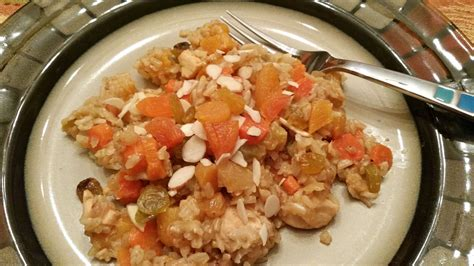

Chicken and Orange Pilaff

Description
A good recipe to use up leftover chicken or turkey.
Ingredients
- Leftover chicken (or turkey)
- 175g uncooked basmati rice
- 2 chicken oxo cubes
- 1 onion
- 30g butter
- 1 small tin mandarin oranges in juice
- Chopped blanched almonds (optional)
Steps
- Chop the onion and fry gently in melted butter until translucent
- Add 600 ml bioling water to oxo cubes in a jug to make stock
- When the onion is translucent, stir in uncooked rice and cook for 1 minute, stirring all the time
- Add the stock and cook for 10 mins on a low simmer, cover the pan, stir occasionally
- Add the cooked chicken and cook until chicken is heated through, approx 5 minutes
- Add drained mandarins and stir gently
- You can also add chopped blanched almonds if you wish